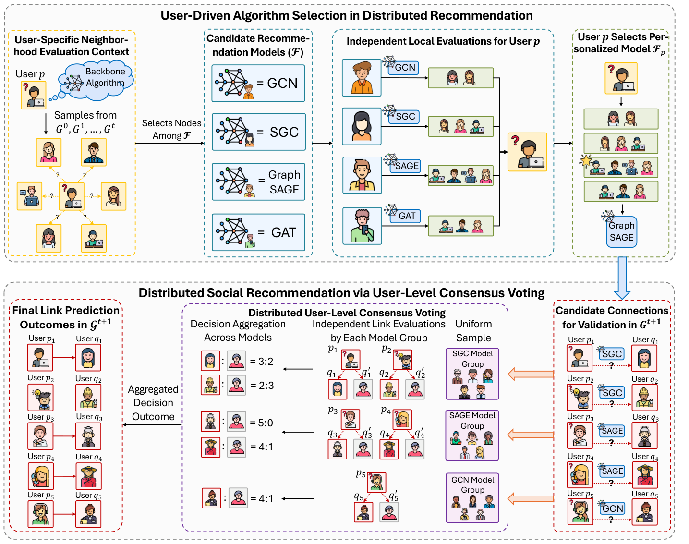

From Aggregation to Selection: User-Validated Distributed Social Recommendation (从聚合到选择：用户验证的分布式社交推荐)
- 会议/期刊: WWW 2026 (HCRS Workshop)
- 作者与机构: Jingyuan Huang, Dan Luo, Zihe Ye, Weixin Chen, Minghao Guo, Yongfeng Zhang (Rutgers University / Lehigh University / HKBU)
- 推荐链路定位: 召回（好友链接预测）
- 研究方向: 社交与群组推荐 / 去偏公平与工业架构
- 论文原文: arXiv:2505.21388v4
- 开源代码: agiresearch/DeSocial
TL;DR (1分钟核心速览)
现有分布式社交推荐把多个客户端模型的打分用固定规则聚合，聚合模块成为隐式单点信任，用户无法参与验证；且集中式 Hit@K/NDCG 无法度量"用户确认的推荐是否正确"。本文提出 DeSocial：每个用户基于本地社交邻域从模型池（MLP/GCN/GAT/GraphSAGE/SGC）中自选个性化骨干，再由 n 个验证者用户独立本地推理 + 多数共识投票给出最终链接判定，并提出共识式指标 Acc@K。在 UCI/Memo-Tx/Enron/GDELT 四个真实社交网络上，Acc@2 较最强单骨干平均提升 4.51%，较集成/联邦基线亦全面领先。
Background & Motivation (背景与核心矛盾)
- 主流范式: 社交推荐（好友建议）本质是时序图上的链接预测；分布式范式让多个用户各自持模型、联合影响推荐结果，以贴合"以用户为中心"的局部社交结构。
- 前人局限一（聚合即单点）: GEN、E2GNN、FedGraphNN 等靠参数融合、软投票或梯度聚合产出最终列表，聚合函数成为隐式单点信任，用户无法把"我是否认可这条连接"注入决策环。
- 前人局限二（评测失配）: Hit@K/MRR/NDCG 假设所有评估者共享同一打分函数与全局排序；而用户验证场景下验证者模型异构、只给二值局部信号，标准指标无法回答"用户批准的推荐是否真的正确"。
- 核心洞察 (Key Insight): 社交图天然分布式存储、无全局端到端优化、验证者无共享参数、且需在方差下达成共识——这四点决定了"聚合"不如"选择+共识"。
- 本文切入点: 把决策权从聚合函数交还给用户：先按本地邻域选模型，再让同模型组的验证者投票，用 Acc@K 直接度量共识正确性。
Method (核心方法设计)
1. 整体框架 (Overall Architecture)
DeSocial 分两段闭环：①用户驱动算法选择——对每个在 \(G_{t+1}\) 中有候选连接的用户 \(u\)，在其历史邻域上采样正负邻居对 \(\Gamma\)，由模型池中各算法的持有者分别打分并回报加权胜率，\(u\) 据此选出个性化骨干 \(F_u\)；②用户级共识投票——对候选连接 \((p,q)\)，从使用 \(F_p\) 的用户集合中均匀采样 \(n\) 个验证者组成委员会，各验证者把 \(D_t\) 拷入本地内存、用各自模型独立推理并给出二值票，多数票即最终判定。全程无全局优化、无参数共享，仅靠用户级共识收敛。
flowchart TD
A["时序社交图 D_t = ∪G_τ"] --> B["用户 u 采样正负邻居对 Γ"]
B --> C["模型池 F 各算法本地评估 → 加权胜率"]
C --> D["选出个性化骨干 F_u"]
D --> E["从 VF_u 均匀采样 n 个验证者"]
E --> F["各验证者本地独立推理 → 二值票"]
F --> G["多数共识 Ver(·) → G_{t+1} 链接判定"]
2. 关键设计拆解 (Key Designs)
- 用户驱动算法选择（把"聚合"换成"选择"）：痛点是无全局优化时无法端到端训练统一模型。用户 \(u\) 在邻域对集 \(\Gamma=\{(v_p,v_n)\mid v_p\in\cup_\tau N^\tau(u),\,v_n\notin\cup_\tau N^\tau(u)\}\) 上，按各算法区分正负对的能力加权投票选骨干：
其中 \(\Pi\) 按连接出现时刻 \(t_e\) 指数加权，越近期的连接权重越大。直觉：让每个用户只用自己的局部证据挑"最懂我社交圈"的归纳偏置，避免异构局部视图被一个聚合器抹平。
- 用户级共识投票（方差下的鲁棒判定）：单验证者易受局部噪声与模型方差影响。委员会 \(\Phi_{p,t+1}\sim\text{UniformSample}(V_{F_p},n)\) 中每个 \(\phi\) 用自身模型对 \((p,q)\) 与一组负样本 \(q'\) 比较，投出
最终 \(\text{Ver}(\Phi_{p,t+1},p,q,t)=\text{Majority}(\text{Vote})\)，即过半票为正向。直觉：只要单模型优于随机猜测，多数投票就能压掉个体方差；但若骨干弱于随机，投票会放大错误——这正是"必须先选好模型"的原因。
- 训练目标、负采样与推理效率：各验证者独立最小化 \(\mathcal{L}(\hat{G}_{t+1},G_{t+1};\Theta_u)\)，仅被选为验证者的用户参与更新（对齐 DeSocial 实际执行模式，避免集中式模拟的全图更新开销）。负样本采用 [57] 的随机采样策略；请求与投票分别按 \(B_{req}\)、\(B_{vote}\) 分批以降低分布式通信与推理开销。
Experimental Setup & Evaluation Protocol (实验设置与评估协议)
- 数据集与预处理: 四个真实社交网络，按时间戳均匀切为 40 个时间片（每片边数近似相等、保持时序）：
| 数据集 | 类型 | 时间片 | 说明 |
|---|---|---|---|
| UCI | 社交消息网络 | 40 | 小规模、结构稀疏 |
| Memo-Tx | 比特币交易信任网 | 40 | 中等规模、信任边 |
| Enron | 邮件通信网 | 40 | 企业邮件社交 |
| GDELT | 全球事件共现网 | 40 | 大规模、稠密 |
- 数据划分与防穿越 (Splitting Strategy): 滚动 Leave-One-Out（时序切片级）——\(t\) 时刻用 \(\cup_{\tau=0}^{t-1}G_\tau\) 训练、\(G_t\) 验证、\(G_{t+1}\) 测试，非按用户/边剔除。
- 排名评测协议 (Ranking Protocol): 提出 Acc@K（\(K\in\{2,3,5\}\)），即 1 条用户批准正连接 + \(K-1\) 条随机负连接中，正连接获得最高共识分的概率；负样本按 [57] 随机策略采样，属采样排序而非全库排序。
- 对比基线与超参设置: 单骨干 MLP/GCN/GAT/GraphSAGE/SGC；分布式基线 GEN、E2GNN（集成）、FedGraphNN（联邦），均支持上述五骨干。报告五次验证者设置运行的均值±标准差。
Key Experimental Results (实验关键数据)
1. 主实验对比 (Main Results)
| 方法 | UCI Acc@2 | UCI Acc@3 | Memo-Tx Acc@2 | Memo-Tx Acc@3 | Enron Acc@2 | Enron Acc@3 | GDELT Acc@2 | GDELT Acc@3 |
|---|---|---|---|---|---|---|---|---|
| MLP | 66.38 | 52.52 | 73.61 | 66.57 | 81.48 | 75.20 | 91.28 | 87.60 |
| GCN | 63.90 | 51.90 | 69.62 | 61.23 | 79.92 | 74.41 | 82.94 | 74.08 |
| GAT | 61.15 | 48.24 | 72.51 | 65.88 | 85.52 | 80.30 | 88.29 | 81.34 |
| GraphSAGE | 69.00 | 55.78 | 82.85 | 75.47 | 90.27 | 86.16 | 93.16 | 89.59 |
| SGC | 72.77 | 62.77 | 80.37 | 74.78 | 88.24 | 84.50 | 95.59 | 92.46 |
| GEN | 66.19 | 52.42 | 81.92 | 74.41 | 90.04 | 85.77 | 92.87 | 83.94 |
| E2GNN | 74.98 | 63.00 | 83.83 | 76.83 | 86.44 | 80.65 | 94.95 | 91.34 |
| FedGraphNN | 70.47 | 60.08 | 82.72 | 75.32 | 88.87 | 84.39 | 95.50 | 92.33 |
| DeSocial | 77.63 | 66.01 | 87.25 | 79.65 | 92.11 | 88.39 | 98.13 | 96.09 |
| Improv.% (vs 最强基线) | +3.53% | +4.78% | +4.08% | +3.67% | +2.04% | +2.59% | +2.66% | +3.93% |
2. 消融实验 (Ablation Study)
| 变体 | UCI Acc@2 | UCI Acc@3 | Memo-Tx Acc@2 | Memo-Tx Acc@3 | Enron Acc@2 | Enron Acc@3 |
|---|---|---|---|---|---|---|
| Single Backbone (SGC/GraphSAGE) | 72.77 | 62.77 | 82.85 | 75.47 | 90.27 | 86.16 |
| DeSocial (完整) | 77.63 | 66.01 | 87.25 | 79.65 | 92.11 | 88.39 |
| w/o Personalized（固定单算法） | 76.28 | 65.64 | 85.88 | 79.20 | 92.18 | 88.19 |
| Random Select（随机选算法） | 75.05 | 61.10 | 84.81 | 78.40 | 90.83 | 87.11 |
| Simple Select（按度/聚类系数选） | 73.33 | 56.66 | 86.44 | 78.13 | 90.67 | 87.06 |
| w/o Consensus（单验证者） | 73.35 | 63.16 | 83.96 | 77.28 | 90.08 | 86.36 |
3. 关键实验发现 (Key Findings)
- "选择"优于"聚合"是核心增益来源：DeSocial 较最强单骨干平均 +4.51%，且全面超过 E2GNN（UCI 74.98→77.63）与 FedGraphNN（GDELT 95.50→98.13）；说明即便模型池里已有强模型，参数/打分聚合仍无法替代用户级选择+共识。
- 个性化选择与共识缺一不可，且选择质量敏感：去掉共识（单验证者）UCI 掉 4.28 个点（77.63→73.35），说明多数投票是抗方差主力；而 Random/Simple Select 分别掉至 75.05/73.33，证明"选对模型"比"多模型"更关键——随机或启发式选择会显著削弱共识收益。
- "少即是多"与活跃度分层效应：验证者选择树显示盲目加入更多算法类型可能反而降分，有效验证依赖归纳偏置互补而非数量堆叠；图 2 中 Q1（最不活跃）用户靠活跃验证者的集体评估获得改善，但 UCI 与 GDELT-GCN 上 Q4 因邻域冗余产生冲突信号、全一致率反低于 Q3；图 3 表明委员会规模 \(n\) 增大后增益收敛，实用规模无需很大。
Highlights, Limitations & Rating (亮点、对比与审稿评价)
- 与代表作对比 (vs. Prior Work): 与 E2GNN/GEN 的本质区别是决策级选择而非参数融合/软投票；与 FedGraphNN 的区别是验证者拥有全局图感知、独立推理后共识，而非在局部视图上交换梯度再按固定规则聚合；与单骨干 GNN 的区别是把"一个全局模型"换成"每人一个模型 + 委员会"。
- 可迁移亮点: ① Acc@K 共识指标可直接迁移到任何"多评估者二值判定"的推荐场景（如众包标注、去中心化审核）；② 用本地邻域胜率做模型选择，是一种免全局训练的轻量个性化路由技巧。
- 审稿级局限批判: ① 模型池固定为五个轻量 GNN，未验证更大/演化模型池与验证者可靠性异质（恶意验证者）下的鲁棒性；② 评测仅在采样 Acc@K 上做，缺少全库排序与真实在线 A/B，且集中式模拟中仅更新验证者集合，可能低估分布式真实通信开销。
- 四维评分: 创新性 ⭐⭐⭐⭐ | 实验扎实度 ⭐⭐⭐ | 方法清晰度 ⭐⭐⭐⭐ | 落地价值 ⭐⭐⭐